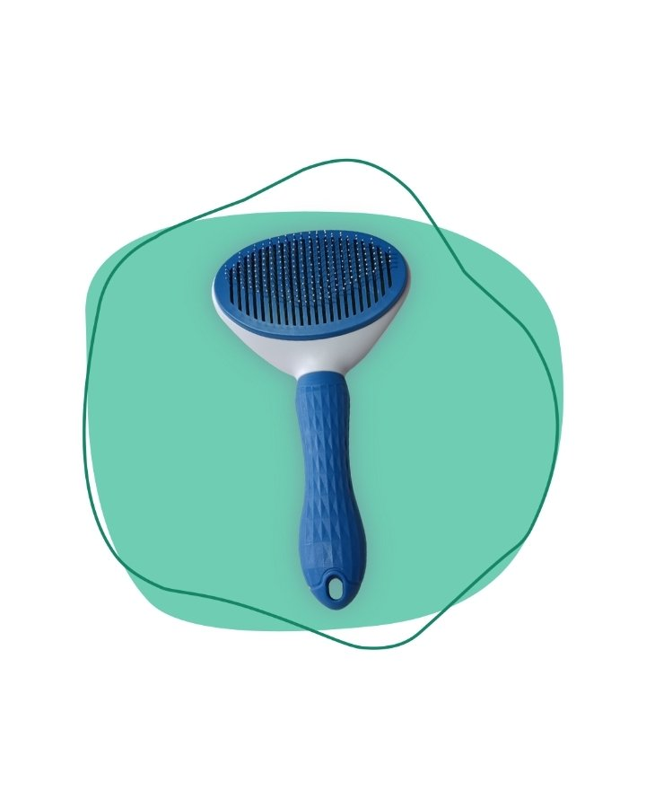

Cepillo con botón retráctil
$ 8.400
Cepillo de cerdas finas que desenreda y saca el pelo muerto. Cuando terminás, apretás el botón, las cerdas se esconden y el pelo sale todo junto, sin tener que sacarlo con los dedos.
- Cerdas finas con la punta redondeada
- Mango de goma que no se resbala
- Agujero en el mango para colgarlo
Preguntas frecuentes sobre el cepillo
- ¿Para qué tipo de pelo sirve?
- Para pelo corto, mediano y largo. En pelo largo, cepillá por partes y empezá por las puntas para no dar tirones.
- ¿Cada cuánto conviene cepillar?
- En época de muda, todos los días. El resto del año, dos o tres veces por semana alcanza.